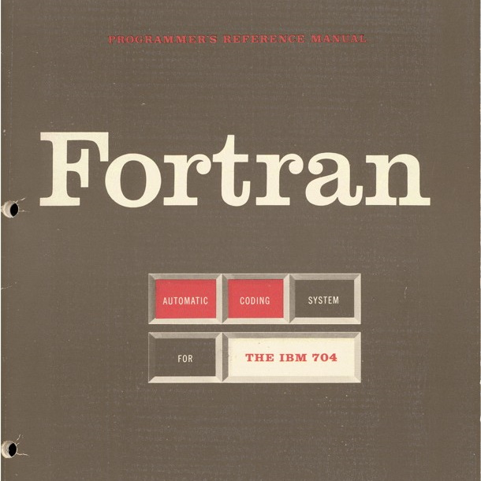
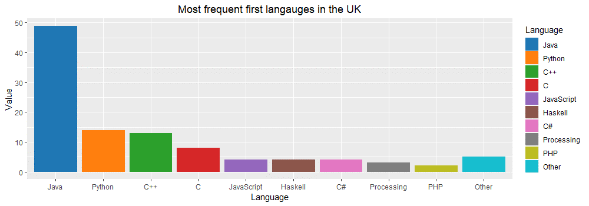

What to teach as the first programming language and why
The number of Google search results for the phrase "choosing the first programming language" at the time of writing is 15,800. This illustrates just how debated the issue of choosing the first programming language is. In this blog post, I will not actually try to answer the question posed in the title of the post. I will not discuss what language we should teach as the first one. Instead, I will look at a more interesting question.
I will investigate the arguments that are used in favour of or against particular programming languages in computer science curriculum. I am more interested in the kind of argumentation that is employed to support a particular choice than in the specific languages involved. This approach is valuable for two reasons. First, by looking at the argumentation used, we can learn what educators consider important about computer science. Second, understanding the motivations behind different arguments allows us to make our own debates about the choice of a programming language more informed.
The scope of this blog post is limited to the choice of the first programming language taught in an undergraduate computer science programmes at universities. This means that I will not discuss other important contexts such as choices at a primary or a secondary education level, choices for independent learners and choices in other university degrees that might involve programming.
Note that this blog post is adapted from an essay that I wrote as part of a Postgrduate Certificate for Higher Education programme at University of Kent, so it assumes less knowledge about programming than a typical reader of my blog has. This makes it accessible to a broader audience thinking about education though!
1. Why programming language matters
Professional programmers use multiple programming languages in their work and the languages they use change when switching jobs or starting a new project. Learning new languages is a normal part of their work, but it can be easier if a person is already familiar with a related language. The choice of the first programming language taught at a university does not determine student's future careers, but it might affect their career direction and it might make independent learning in the future easier. The choice of the first programming language matters for a number of reasons.
1.1 Immediately useful skills
An obvious factor is that certain choices give students practical programming skills that they can immediately use in industry. A frequently mentioned goal [1], is that students should have enough practical experience by the end of their first year to do a summer internship. This requires introducing a widely used programming language in the first year, although this can be done in the second semester.
1.2 Lens for further learning
Programming is often presented as a tool to support thinking [2], and it has been argued that "learning and using certain computer languages can influence how people solve problems" [3], drawing a parallel with the Sapir–Whorf hypothesis about spoken languages. The choice of a first programming language is important because it guides students in thinking about and understanding further subjects taught as part of a curriculum. For example, teaching a mathematically oriented programming language might support understanding of further mathematical subjects.
1.3 Secondary programming tools
A programming language comes with an eco-system of secondary tools. Those are often important in practical programming work, but some educators view those as distractions that should be avoided when teaching programming. The choice of a first programming language affects what kind of secondary tools will students be exposed to. Some languages require students to master complex tools used by more experienced developers while other languages may be used in isolation, for example by using an environment designed specifically for education [4].

Figure 1. Most frequent first programming languages in the UK adapted from [5] and Australia/New Zeland adapted from [18].
2. Examples of first programming languages
The most common introductory programming languages in the UK and Australia/New Zealand have been quantitatively studied elsewhere [5, 18] and the results are shown in Figure 1. I discuss four example options in detail. Two of my examples are representative of the two most widely selected languages in the UK and one discusses an uncommon choice. My last example discusses a curriculum used at MIT until 2009, which is often critically referenced in literature discussing the choice of programming language and is thus worth discussing, despite being no longer in use.
2.1 Popular programming language choices
Java is the most popular first programming language at UK universities (taught in 61% courses). According to the TIOBE index , Java is also the most popular programming language overall, so this is an expected choice. Teaching Java gives students immediately useful programming skills. The course at University of Kent teaches the main-stream object-oriented programming paradigm using Java. It uses an educational programming environment BlueJ [6], which hides many of the complexities of professional tools for Java. As a widely used programming language, Java also makes it possible to teach a number of subsequent courses using a language that students already know.
The second most common first language at UK universities is Python (17% courses), which is used, for example, by the Queen Marry University of London. Interestingly, it is as popular as Java in Australian and New Zealand [5] and most frequent at top-ranked US universities [7]. The motivations for choosing Python are similar to those for using Java, although Python is more frequently used in recently popular domains such as artificial intelligence.
2.2 Uncommon programming language choices
An example of a curriculum that makes an uncommon choice of the first programming language is the course at University of Cambridge. In the first year, Cambridge teaches ML (which supports the functional paradigm) and then Java. ML is not used by industry and is not supported by widely used secondary tools. Public information about the choice of the language deemphasize the choice and focuses on the fact that it is used to teach computer science thinking. To quote the Department of Computer Science and Technology Admissions FAQ [16] "We aim to teach you the core principles so that you can quickly grasp any new language that comes along."
Another uncommon choice was the Scheme language taught at MIT until 2009 using the Structure and Interpretation of Computer Programs (SICP) [8] textbook. SICP is regarded as challenging, but profound read ("it dramatically raised the bar for the intellectual content of introductory computer science" [12]). It relies on the idea of treating code as data, which is a fundamental concept in Scheme, but which is not – in the same form – present in many other languages. For this reason, SICP is equally challenging and profound read for experienced professional programmers. This aspect of SICP is often admired, but as I discuss later, also criticized by educators.
3 Arguments for choosing a first language
I now focus on the main subject of this essay, which is to consider the arguments that are used to support different choices of a first programming language. I review a range of academic publications written on the subject and critically reflect on the argumentation used.
3.1 Language aspects discussed (and not discussed)
Before discussing the arguments, I briefly review language aspects that are often mentioned in the discussion, as well as some that are rarely mentioned in writing. Those partly overlap with the reasons why language matters discussed in Section 1, but there is more focus on technical aspects.
Use in industry and secondary tooling. Two aspects that were discussed before and that are often referenced in literature are whether a language is used in industry and what secondary tooling it provides. Authors in favour of languages that are not widely adopted by industry often suggest [1, 9] that a second language can be introduced in the second part of the first year. This provides them with necessary practical knowledge once they are familiar with basic programming concepts.
Programming language paradigm. Many authors argue in favour of a certain language based on its programming paradigm. This can be both object-oriented [4] and functional [10]. Authors often write for their own sub-communities which already view one paradigm as superior. Such arguments may also be proxy arguments for arguing for a certain lens for further learning, which is another important aspect of the choice of programming language.
Syntactic simplicity or familiarity. Syntax is an aspect of programming language that has no universally accepted best solution. It is used in arguments in favour of programming languages that take, in some sense, a more extreme position – either minimalistic syntax of Scheme (as used by SICP), mathematical notation [11] or the absence of syntactic noise in languages like Python. Such arguments are often stated without an attempt to convince the reader that such extreme position is more desirable.
In addition to important aspects that are often mentioned in academic writing, there are also a number of aspects that are likely equally important, but are not discussed explicitly.
Elegance of computer science ideas. One of the key arguments in favour of the SICP textbook is that it teaches elegant computer science ideas. Unlike with discussions about syntax, there appears to be a wide agreement in the computer science community on the elegance of some ideas (such as those presented in SICP). One possible explanation of why "elegance" does not explicitly appear in argumentation is that it is seen as an informal or even artistic argument when compared to arguments that can be stated more formally.
University culture and politics. The choice of the first programming language in a computer science curriculum is inevitably a subject to university politics. The choice depends on personal preferences of academics, but also the research conducted at the university (a department with active research on functional programming is more likely to choose functional programming language). There are also more general cultural points to consider. Universities that present themselves as more practical will likely choose a language used in industry while more academically inclined universities can make more challenging and less directly practical choice. This is, indeed, the case for the four concrete curricula (Kent, Queen Marry, Cambridge and MIT) discussed earlier in this blog post.
3.2 Argumentation in favour of popular languages
I now consider a number of arguments in favour of following a certain curriculum in introductory programming course. Those come from published academic papers, either in education research venues or in computer science venues with one exception – commentary explaining MIT's decision to move from SICP and the Scheme language to Python is only available as a transcript of a comment. I start by looking at arguments supporting popular programming languages, namely Python and Java.
Programming by poking
Given the cult-like status of the SICP textbook, the decision to switch from Scheme to main-stream Python at MIT attracted a lot of attention. According by Gerry Sussman, a co-author of SICP [13]:
[SICP] no longer prepare[s] engineers for what engineering is like today. (...) In the 80s and 90s, engineers built complex systems by combining simple and well-understood parts. (…) Today, this is no longer the case. (…) Engineers now routinely write code [that] they don't fully understand. (…) Programming today is more like science. You grab this piece of library and you poke at it. You write programs that poke it and see what it does. And you say, "Can I tweak it to do the thing I want?"
This argument is based on a profound observation about how programming is done nowadays. Although it does not talk about specific programming languages, teaching "programming by poking" requires a language that is widely used (so that it has a range of libraries students can poke) and likely also one that became more popular in recent years and fully embraces this style of working such as Python or JavaScript.
Educational programming environments
Another approach to introductory programming curriculum is to use an educational environment such as BlueJ [6], which "allows students to concentrate on solving programming problems without becoming distracted by the mechanics of compiling and executing Java programs" [14]. Such environments exist for a variety of languages, but are particularly popular when teaching Java, which otherwise relies on very complex secondary tools. Education environments can also take the form of microworlds –easy to use problem domains (such as robot moving around a two-dimensional grid) that allow educators "to introduce the material in a way that limits the complexity [of languages such as Java]". Otherwise "details can easily overwhelm introductory students." [4]
Advocating for an educational programming environment is, to some extent, arguing for the opposite of programming by poking. Since fully understanding many real-world libraries and tools has become impossible (or, at least, impractical), educational environments shield the students from this complexity. They provide environments that can be fully understood and allow educators to focus on concepts such as composition of simple and well-understood parts.
3.3 Argumentation in favour of uncommon languages
The argumentation in favour of popular languages focuses on general educational approach which is then supported by a suitable first programming language. In contrast to this, the argumentation for less widely used programming languages often has a more technical focus. There are also interesting points arising from the fact that students are not likely to know such languages beforehand.
Fundamental computer science concepts
Many of the arguments that are used to support the choice of a less common programming language as the first language point out that the language makes it possible to better teach certain aspects of computer science which the educators consider fundamental. Academic publications discussing such approaches also often contrast their method with the widely known SCIP curriculum – which is seen as focusing on non-essential (albeit elegant) computer science concepts.
One concrete example is the How to Design Programs (HTDP) textbook [17], which emphasizes "basic notions of modularity, specification, and data abstraction" and argues that those "should not be displaced by more advanced topics, such as design patterns" [9]. It uses a series of teaching languages based on Scheme (also used by SICP) with increasing complexity. The approach is thus akin to using educational environments. Another critique of SCIP [11] argues for a language with syntax closer to mathematical notation that allows students to easily prove equations about programs. The paper does not, however, discuss why this is something that students should be able to do – it was written for a sub-community where the importance of program proofs is accepted.
Equaliser between students
An interesting argument in favour of an uncommon language is that it "works as an equaliser between students who know some programming and those who don't" [10]. The authors support their observation with an empirical study – students without prior programming experience (who are disproportionally more frequently female students) do as well in the course as students with prior programming experience in other languages. The Cambridge admissions FAQ [16] also recommends prospective students who want to start programming independently that "it may be a good idea to learn [a programming language] that is not explicitly taught in the Tripos."
4. Evaluating arguments for a first programming language
As can be seen from the review in the previous section, the choice of a first programming language can be supported by a wide range of arguments. Some present incommensurable positions that focus on different aspects of education and some are even contradictory. In this section, I discuss reasons why making a conclusive argument in favour of any first programming language is difficult.
Bias in empirical studies. First of all, some educators support their choice of a first programming language with an empirical study, for example looking at student satisfaction surveys between two groups or two years. However, such study is very hard to conduct in a controlled way. An educator who gets the opportunity to develop new material using a programming language of their choice will likely deliver a more engaging course, regardless of the programming language.
Good reasons can support any choice. There are cases where compelling arguments exist for opposing perspectives. For example, should we teach a programming language that supports programming by poking, or should we use an educational environment that shields students from such complexities? Since there is no wide-ranging agreement of what "fundamental concepts" of computer science are, papers using this argument often reveal more about their authors than about the programming language they favour.
How we choose arguments to use. The fact that there are compelling arguments to support almost any choice of a first programming language does not mean that such arguments are made carelessly and without thorough consideration. It shows that there is perhaps another level to the problem. Unstated convictions about what computer programming should look like determine both the language of choice and the arguments that provide strong support for using such language as the first language in a curriculum.
5. Conclusions
The argumentation reviewed in this essay is well thought-out and often supported by empirical evidence, yet, there is no conclusion as to which programming language should be introduced as the first one in an introductory programming curriculum. Moreover, the divergent nature of the argumentation suggests that we should not expect to ever get one clear answer to this question.
The choice of a first language is what sociologists call a wicked problem. The notion appeared in the context of social policy and identifies problems that cannot be definitely described. Solutions to wicked problems "cannot be meaningfully correct or false; and it makes no sense to talk about 'optimal solutions' to [wicked] problems unless severe qualifications are imposed first" [15].
Considering the choice of a first programming language as a wicked problem, we can now understand why there is no optimal solution. A solution is determined by the qualifications we use, such as our choice of fundamental computer science concepts. It is impossible to perform objective empirical evaluation, because what we test depends on what we consider as the goal of the course. Finally, every answer has unique characteristics that are often incommensurable with other answers. A curriculum using a new language optimizes for a new aspect of teaching, not commonly used in the past.
In conclusion, I do not suggest that presenting convincing arguments in favour of a first programming language is meaningless, but rather that we need to be aware of our motivations for choosing them. Such arguments will only ever be convincing and allow a meaningful debate if we agree on the "severe qualifications" that are required to talk about optimal solutions to wicked problems.
References
- Tobin-Hochstadt, Sam, and David Van Horn. "From principles to practice with class in the first year." In Proceedings of Trends in Functional Programming In Education, TFPIE 2013.
- Allen Downey. "Programming as a Way of Thinking". Scientific American, 2017. Available online at https://blogs.scientificamerican.com/guest-blog/programming-as-a-way-of-thinking/ (retrieved 12 May 2019)
- Rob Mitchum. "Computer programming languages can impact science and thought". Available online at https://news.uchicago.edu/story/computer-programming-languages-can-impact-science-and-thought (retrieved 12 May 2019)
- Lister, Raymond. "Teaching Java first: experiments with a pigs-early pedagogy." Proceedings of the Sixth Australasian Conference on Computing Education-Volume 30. Australian Computer Society, Inc., 2004.
- Murphy, Ellen, Tom Crick, and James H. Davenport. "An analysis of introductory programming courses at UK Universities." The Art, Science, and Engineering of Programming, 2017, Vol. 1, Issue 2, Article 18
- Kölling, Michael. "Using BlueJ to introduce programming." Reflections on the Teaching of Programming. Springer, Berlin, Heidelberg, 2008. 98-115.
- Philip Guo. "Python Is Now the Most Popular Introductory Teaching Language at Top U.S. Universities". Available online at: https://cacm.acm.org/blogs/blog-cacm/176450/fulltext (retrieved 12 May 2019)
- Abelson, Harold, Gerald Jay Sussman, and Julie Sussman. "Structure and interpretation of computer programs." MIT Press, 1985.
- Felleisen, Matthias, et al. "The structure and interpretation of the computer science curriculum." Journal of Functional Programming 14.4 (2004): 365-378.
- Chakravarty, Manuel MT, and Gabriele Keller. "The risks and benefits of teaching purely functional programming in first year." Journal of Functional Programming 14.1 (2004): 113-123.
- Wadler, Philip. "A critique of Abelson and Sussman or why calculating is better than scheming." ACM SIGPLAN Notices 22.3 (1987): 83-94.
- Brian Harvey. "Why Structure and Interpretation of Computer Programs matters". Boston Globe (2011). Available online at: https://people.eecs.berkeley.edu/~bh/sicp.html (retrieved 12 May 2019)
- Yarden Katz. "Programming by poking: why MIT stopped teaching SICP". Archived online at: http://web.archive.org/web/20180609142559/http://www.posteriorscience.net/?p=206 (12 May 2019)
- Hagan, Dianne, and Selby Markham. "Teaching Java with the BlueJ environment." Proceedings of Australasian Society for Computers in Learning in Tertiary Education Conference ASCILITE. 2000.
- Rittel, Horst WJ, and Melvin M. Webber. "Dilemmas in a general theory of planning." Policy sciences 4.2 (1973): 155-169.
- Department of Computer Science and Technology, University of Cambridge. "Admissions FAQ". Available online at https://www.cst.cam.ac.uk/admissions/undergraduate/faqs (Retrieved on May 12 2019)
- Felleisen, Matthias, et al. How to design programs: an introduction to programming and computing. MIT Press, 2018.
- Mason, Raina, and Graham Cooper. "Introductory programming courses in Australia and New Zealand in 2013-trends and reasons." Proceedings of the Sixteenth Australasian Computing Education Conference-Volume 148. Australian Computer Society, Inc., 2014.
Published: Monday, 2 December 2019, 4:48 PM
Author: Tomas Petricek
Typos: Send me a pull request!
Tags: functional, research, academic, programming languages, philosophy, writing